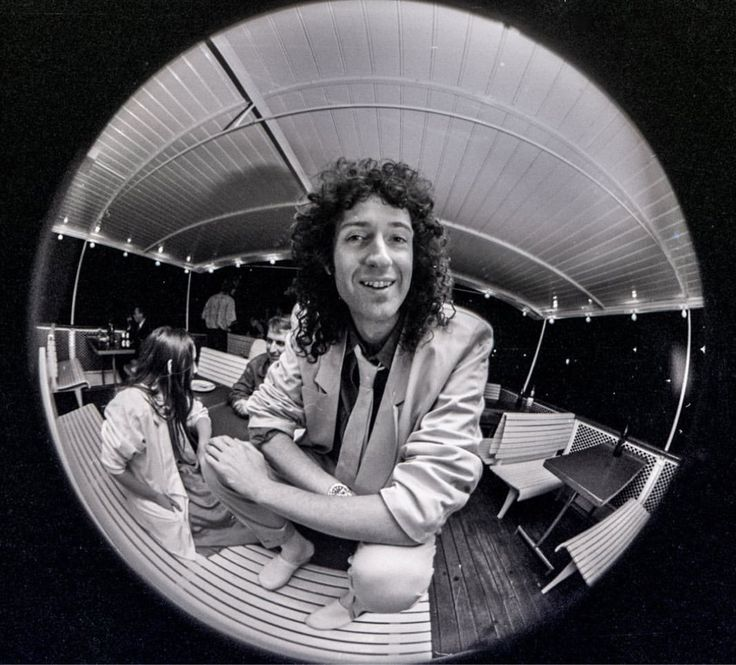
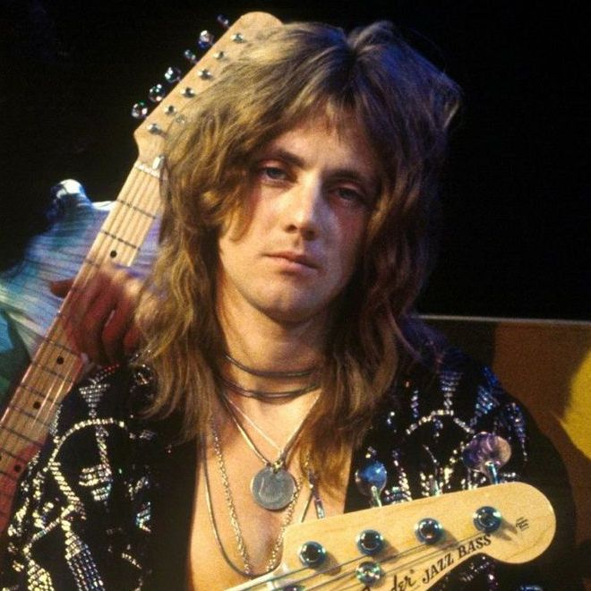

Freddie Mercury
Freddie Mercury was the legendary lead vocalist of Queen, known for his powerful voice and energetic performances. He became one of the most iconic figures in rock music history.

Brian May
Brian May is Queen's guitarist, known for his unique sound and virtuosity. He's one of the founding members and remains a key figure in the band's musical identity.

Roger Taylor
Roger Taylor, the band's drummer, contributed not only with his drumming skills but also as a songwriter and vocalist. His dynamic presence on stage was unmatched.

John Deacon
John Deacon, the bassist of Queen, wrote many of the band’s hits. His basslines provided the rhythmic foundation of Queen’s sound, and his contributions remain legendary.